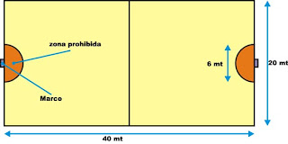
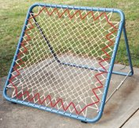
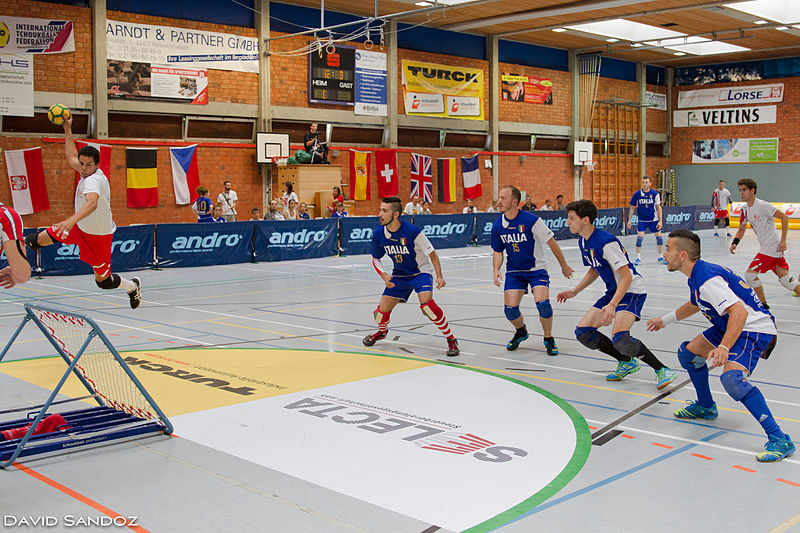

Para jugar se utiliza una pelota de handball y se juega en una cancha de 28 por 17 metros en la modalidad de siete contra siete. Se juega en dos equipos en donde el objetivo es anotar más puntos que el equipo rival.

Foto tomada de Thouckballchile
Los puntos se consiguen haciendo que la pelota impacte sobre los dos arcos red (muy similares a un trampolín) que se encuentran en cada extremo de la cancha. Estos arcos red también llamados centros de rebote miden un metro por un metro, y tienen una inclinación de 55°.

Foto tomada de Vimiye disponible en Wikimedia Commons{kind=link}
Los equipos están formados por siete jugadores titulares y por cinco jugadores suplentes.
El encuentro se divide en tres tiempos de quince minutos cada uno en los partidos masculinos, mientras que en los partidos femeninos son tres tiempos de doce minutos cada uno. En el caso de los partidos con jugadores menores a 16 años el partido se divide en tres tiempos de diez minutos cada uno. Los intervalos son siempre de cinco minutos.
El contacto físico entre los jugadores no está permitido, al igual que interceptar pases del equipo rival, con el fin de evitar lesiones y aumentar el respeto y el trabajo en equipo.
Desarrollo del juego
Los jugadores poseen la pelota y el objetivo es hacer que esa pelota impacte sobre los trampolines y que al rebotar caiga en el piso fuera del área. Cada equipo puede anotar en cualquiera de los dos arcos redes, ninguno corresponde a ningún equipo. El área es un semicírculo alrededor de la malla que mide tres metros, los jugadores no podrán ubicarse dentro de ella.

Foto de David Sandoz disponible en Wikimedia Commons
{kind=link}